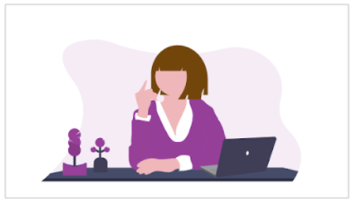

Every Child Ready
Every Child Ready is developing a responsive platform design for both desktop and mobile, to help educational professionals to enrich the lives of their students. Our redesign is an improvement because it’s a simplified, cleaner, more user friendly, navigable, and responsive platform.
The Problem
We have observed that the current site, both on mobile and web, have limitations within the design and lacks in some key resources which cause teachers to spend extra time planning and searching for outside tools.
The Solution
We believe providing a unified, concise, and easy to navigate platform for teachers of Every Child Ready to prepare lesson plans, input data, and communicate with parents will reduce the stress and extra work teachers often experience throughout the school year.
The Team and My Roles
The team consisted of four UX/UI Designers from the UX/UI Bootcamp though GW. For the project, I primarily acted as a project manager and UX Researcher. I did also participate in designing.
The Current Site
We started by taking a look at the current site. One member of our team works for Every Child Ready and was able to give us access to the platform and walk us through the site.
Initial Thoughts
- The site is not intuitive for first time users.
- The mobile version of the site has navigation glitches with the responsive design.
- There are many useful features, but it is unclear how to use them.
- The Home Page offers no information about the site or program.
Interviews
We interviewed 5 current employees of Every Child Ready to figure the what/how/why of using the site. Three of the teachers were also able to show us a walkthrough of what they will usually do on the site.
What we learned from the interviews:
- Most teachers use the site for planning and typically only visit the platform on desktop.
- Teachers are using other resources/platforms outside of ECR to communicate with parents.
- Mobile is not completely responsive, causing issues for those not working on desktops..
Survey
There were many areas of the site we wanted to work on, but because of time, we needed to prioritize a feature that was going to be beneficial for the teachers. We created a survey and sent it to approximately 300 users of the platform, with a response of about 30.
“I am using a new phone… and have been
forced to try to navigate using a cellphone that
the system kept saying it was incapable of
accessing… I need a laptop or computer.”
“Using a phone looks the same as if we were
using a computer and it’s hard to get
everything on a smaller screen.”
“I think it would be helpful to have more quick
links for weekly materials, perhaps a list of
physical items teachers can prepare, than a
separate list of PDFs/ECR materials…”
Empathy Map
We created an empathy map because we wanted to get in the mind of a teacher, thinking about what they are doing everyday, and what they are thinking and feeling while they complete these tasks.
Says...
I like platforms with lots of information and features
I’m fine with the current platform since I know it
Thinks...
Likes simplicity
Wishes she could easily contact the parents
It’s hard to find time to make a lesson plan
Does...
Gets to class early for last minute prep
Prints everything out
Uses sites like teacherspayteachers
Feels...
Loves seeing the children learn
Anxious about creating last minute lesson plans
Overwhelmed at the idea of having to learn a new platform
Pains
Having to take multiple steps to perform what should be simple tasks
Sometimes I can’t find the information I’m looking for
I have a family, so I struggle to find time to plan and enter grades
Gains
Being able to have an exciting lesson for the kids
Save time when planning a lesson
Problem Statement
We believe providing a unified, concise, and easy to navigate platform for teachers of Every Child Ready to prepare lesson plans, input data, and communicate with parents will reduce the stress and extra work teachers often experience throughout the school year.
Every Child Ready was designed to set teachers up for success by providing accredited training for teachers, daily classroom lesson plans and corresponding student activities, in addition to tracking the progress of students. We have observed that the current site, both on mobile and web, have limitations within the design and resources on the platform, which is causing teachers to spend wasted time planning and searching for other platforms and resources. How might we improve the site so that the teachers are able to complete all tasks quicker and without having to go to other platforms?
Feature Prioritization
There were many features and pages we wanted to redesign, but because the assignment was for two weeks, we had to decide what to prioritize. We created a feature prioritization matrix to see what would we could get done in time that would benefit the users the most. This is what made us finally decide on focusing on the schedule page, especially for mobile.
Because we had to figure out what to prioritize, there were many elements that we did not get to work on, specifically the idea of a Parent Portal for teachers to be able to easily communicate with parents without having to change platforms.
Our UX Hypothesis
Given that our users are not able to easily navigate the Every Child Ready Platform on their mobile device to perform tasks such as being able to check daily schedules and upcoming needed materials, as well as making changes to their schedule. This causes users to sometimes pause their lesson or spend extra time having to access the desktop version.
We believe that a more responsive web design for the weekly and daily grid, as well as a more intuitive scheduling tool, will allow teachers to better utilize the platform at any given moment and will not interrupt their routine while teaching, minimizing their lesson planning efforts.
Story Board
Thinking of our user, we came up with a story board, mapping out a situation where they would be needing the site, and how our new design could make their life easier.
Preparing for Class

A preK teacher at Every Child Ready scans over her lesson for the day.
Asking the TA for Help
The teacher asks the TA what the materials are for the next lesson.
Frustrated
The TA uses her mobile device to log into the current ECR platform. It is not responsive and she can’t find the materials.
New Responsive Site
A few months later, the platform is updated. It is mobile friendly and offers a cleaner and more useful layout to allow for easy scheduling and discovery.
Features
The update platform allows users to easily find information and potentially access a parent portal.
So Much Easier!
The new update makes the lives of the teachers and TA’s easier, fostering better learning for the children.
Competitor Analysis
Before we started sketching, we wanted to look at other sites and apps to see what the trends were. We want the platform to be intuitive for our users, so sticking to design patterns they are used to seeing would be beneficial.
For desktop, we looked at other teaching platforms, like Blackboard and Canvas. We noticed the sidebar navigation was consistent with these sites. The Every Child Ready site also links to Canvas, which was all the more reason we felt like we should incorporate it to the platform, so users were not having to learn multiple design layouts.
On mobile, our biggest challenge was finding a way to design the schedule. The page contains a lot of information and features, so fitting it to a mobile screen was going to be difficult. We looked at Google Calendar to see how they are designed for mobile since Google was brought up in our user interviews as a site the teachers really liked because of its simple, intuitive design.
Low Fidelity Wireframes
With all the information we had gathered, we were ready to start sketching and designing. Using Adobe XD, I designed low fidelity wireframes. I started with the mobile wireframes since the mobile design was going to be more challenging because of the smaller screen.
For the mobile wireframes, we decided for users to only be able to see the schedule for one day of the week at a time, since seeing more was too overwhelming and unable to fit on the screen.
The main navigation was also only accessible through a hamburger on mobile, while having the sidebar navigation on desktop. The biggest challenge with going from mobile to desktop was figuring out where to put all the extra navigation for the planner page that was consistent with the mobile design. I did not want the users who are used to using one device having to search too much if they had to switch.
Testing
We each had two users, as well as have our instructor, who is familiar with Canvas, test our prototypes. For the test, I had users perform these tasks:
- Log in
- Access the planner
- Assign a lesson to a teacher
- View the lesson plan
- Rate the lesson
From the testing I found that the users were not associating the “Edit” button with being able to assign the colors. Both went to click the lesson to try to assign the color.
Iterating
Taking the feedback from the usability testing, I knew I needed to make it clearer to users how to assign a lesson to a teacher, and my team had the same feedback. Originally we called it an “Edit” function which was confusing to users since it wasn’t clear that “Edit” would also mean “Assign.” I changed the button to say “Assign” as well as making it possible to edit the colors with each lesson because the initial reaction users had for assigning a lesson was clicking on the lesson, instead of the teacher.
The last step was to apply a style guide to the new design for a high fidelity prototype. I chose to stick to colors from the main AppleTree site, as well as the colors from the Every Child Ready logo.
Final Design
Overall, I happy with the design my team and I were able to come up with. I think it solved the initial problem, and there are many places to go with it.
Thoughts
Collaborative working provided us the ability to find solutions to problems and then share as a group to help advance our designs. A huge obstacle was that there was so many tasks to be worked on but we had to prioritize which of the many features that are current in the site we wanted to focus on. As a team, we feel that we have updated the platform to have a professional feel to it that emulates other competitors such as Canvas and Blackboard.
Working in a team and collaborating helped a lot with this project. There were so many features we knew we needed to fix, but individually struggled to find the solutions. By communicating with each other, we were able to add to each other’s’ ideas to create the solution.
There were three main struggles with this project:
- Prioritizing one feature to focus on
- Fitting so much information on the mobile version
- Designing a platform that I did not fully understand
Future Opportunities
The platform has many areas to grow, and it was a shame we could not work on more, but this leaves a lot of opportunities to come.
- Ensure that the platform is compatible on all devices
- Change the language of error messages and buttons
- Update the way teachers can customize the daily scheduling tool
- Update the FSG App to have similar color scheme and looks to the platform
- Update the FSG App to provide easier ways to input data
- Would like to create a Parent Portal